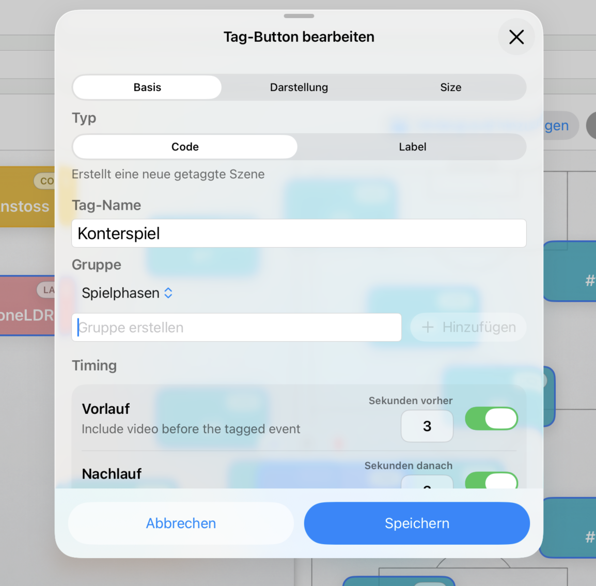
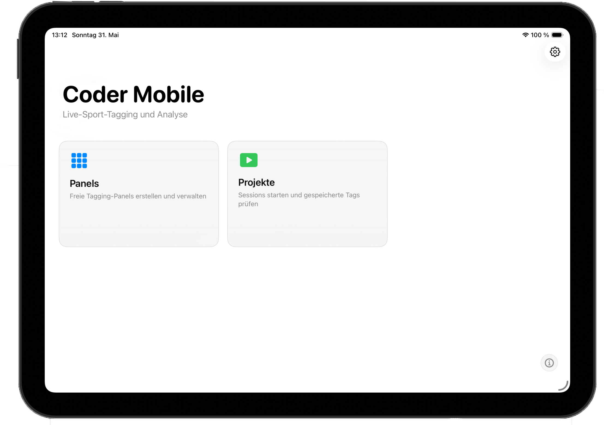
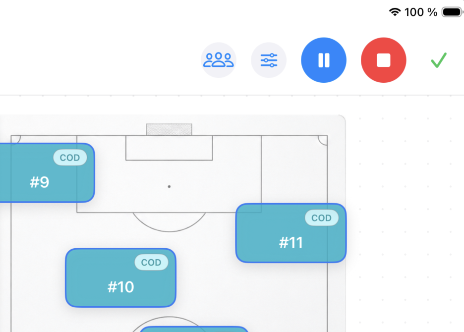
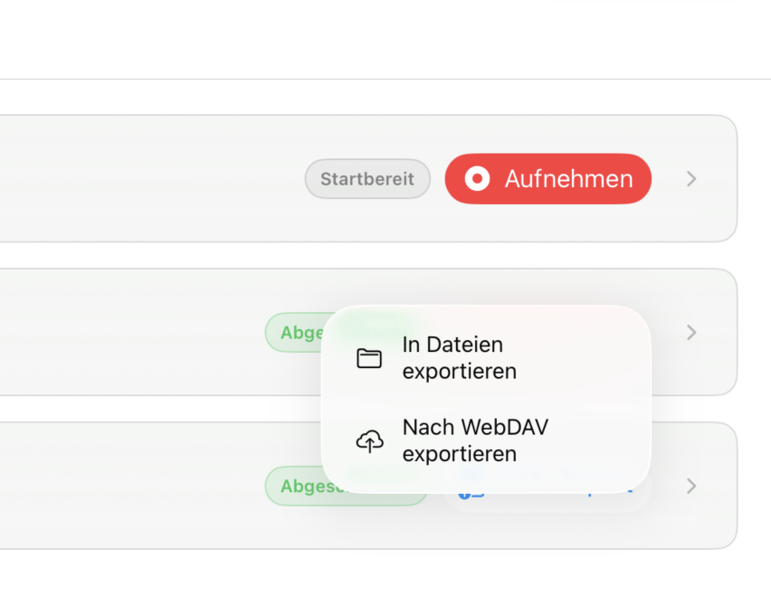

Panels frei gestalten
Erstelle freie iPad-Tagging-Panels mit Codes, Labels, Farben, Größen, Gruppen und optionalen Spielfeld-Hintergründen.
Coder Mobile App
Coder Mobile bringt freie Tagging-Panels, Live-Erfassung und schnelle Projektübergabe auf iPadOS. Coaches und Analysten können Spielphasen, Aktionen und Labels während Training oder Spiel erfassen und die Ergebnisse anschließend im Coder Workflow weiterverwenden.
Entwickelt für Live-Tagging am Spielfeldrand, Trainingsplätze und schnelle Analyse-Workflows direkt nach der Einheit.

Video
Das Overview Video zeigt den Live-Tagging Workflow am Spielfeldrand und im Training.
Schneller Rundgang
Die App konzentriert sich auf das, was am Spielfeldrand zählt: Panels vorbereiten, live taggen, sauber speichern und direkt weitergeben.

Erstelle freie iPad-Tagging-Panels mit Codes, Labels, Farben, Größen, Gruppen und optionalen Spielfeld-Hintergründen.

Starte Projekte, tagge live mit aktiven Codes und verknüpfe Labels automatisch mit den laufenden Spielszenen.

Speichere Projekte, exportiere XML-Dateien und tausche Panels über lokalen Ordner oder WebDAV mit anderen Analysten aus.
Für die Praxis
Tagge live während des Spiels, ohne einen kompletten Analyseplatz aufbauen zu müssen.
Erstelle schnelle Sessions für Übungen, Spielformen und individuelle Beobachtungen.
Tausche Panels, Hintergründe und XML-Exporte über lokale Ordner oder WebDAV/Nextcloud aus.
Kompatibilität
Coder Mobile ist als mobile Ergänzung zum macOS Workflow gedacht: Tagging auf dem iPad, Analyse und weitere Auswertung am Mac. XML Export, Panel-Austausch und gemeinsame Speicherorte halten die Arbeit zwischen Spielfeld und Analyseplatz verbunden.
Mehrsprachig
Coder Mobile ist für internationale Trainer- und Analystenteams vorbereitet und unterstützt Deutsch, Englisch, Französisch und Spanisch.
iOS Download
Der App-Store-Link ist vorbereitet und führt vorerst zur offiziellen App-Store-Seite von Apple.